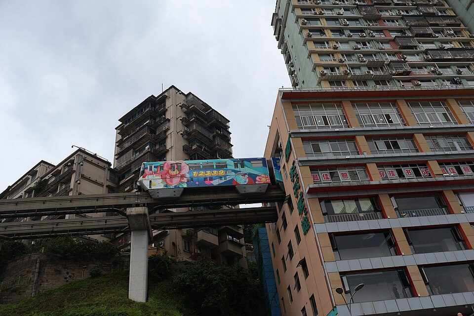

★ 兩篇以上攻略或官方都提到；單一來源 只有一篇。 大眾點評、小紅書、知乎擋爬蟲，人均多半未查到；有寫的是攜程或去哪兒的數字（2026/11 查）。點菜記得說「微辣」。
🚝 李子壩穿樓輕軌
目標
① 觀景平台拍列車從住宅樓穿出：平台面對列車穿出的開口，先對準開口、用連拍 單一來源 ② 13:30 進站，在月台看軌道進樓 單一來源，上車坐第一節車廂看穿樓 ★。從三層馬路走下來到平台，12:55 去對面的梁山雞吃午餐。
機位與時機（12:25～12:55，估算）
- 12:25 觀景平台：在街面，出站約 1 分 單一來源。出口兩說：1 號口（去哪兒 2025、新浪 2026）、B 口（B 站攻略摘要）。

TarnishedPath・CC BY-SA 4.0・Wikimedia Commons（2025-09） - 拍法：仰拍穿樓瞬間，廣角＋低角度 單一來源；不要在樓下拍，平台的視角比較好 單一來源。
- 列車約 3 分一班 單一來源（官方平峰班距未查到）；往哪個方向的車從哪一側出來：未查到。
- 12:50 離開平台 → 12:55 到梁山雞（1 號口對面）。
- 其他機位：鵝嶺棧橋可以俯看穿樓 ★（今天上午走棧橋時就能先看一次）；佛圖關崖線高處 單一來源。
只有觀景平台一個戶外點，不畫路線地圖；平台座標取自 OpenStreetMap。停留時間是自己分配的（估算）。
時間
- 最佳時段沒有一致結論：去哪兒 2025 說早上 8～10 點或傍晚 17～19 點人少，同一篇又說平日 8:30～9:30、17:30～19:00 人擠人；另有遊記說 10:00～15:00 人最多。白天拍比晚上乾淨 單一來源。
- 假日人潮：2026 五一首日李子壩全天客流超過 18 萬人次 ★；新浪寫「排隊 1 小時、拍照 5 分鐘」 單一來源。12/10 是週四平日。
- 平台順時針單循環通行 ★（開始時間兩說：2026 春節／2026 五一）；從 1 號口進、經江邊人行道離開 單一來源。12 月平日有沒有實施：未查到。
實用
- 平台免費，不要相信路邊黃牛收費帶路 單一來源；開放時段未查到（6:00～22:30 是地鐵營運時間，不是平台的時段）。
- 穿的是住宅樓：樓上住人、樓下通車，保持安靜 ★。
- 停留 20～40 分 單一來源；行程只排 30 分，含走到餐廳。
- 廁所：未查到；寄物：未查到。
吃的
- 順路：行程已排 李子坝梁山鸡（1 號口對面）。李子壩本身吃的選擇少 單一來源。
來源：gochinatravel 2026-09、去哪兒 2025-06、新浪 2026-05、鳳凰網 2026、網易 2026-08。筆記：1210_李子壩_園內路線、1209_洪崖洞鵝嶺攻略、1209_重慶動線